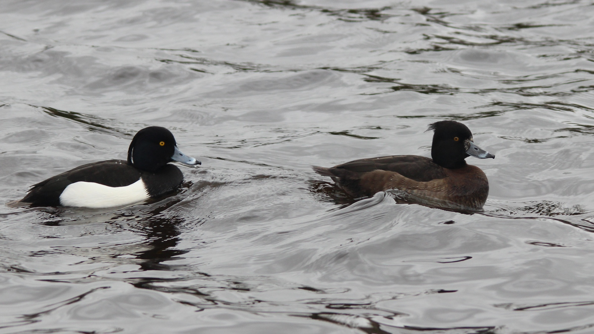

Aythya fuligula — بطة غواصة بين العبور ومواقع الشتاء
الهوية والأسماء
بطة قنبراء طائر مائي غواص من فصيلة البطية Anatidae ورتبة الإوزيات Anseriformes، واسمه العلمي Aythya fuligula. يرد اسم «أبو خصلة» في المراجع السعودية والليبية، وتستخدم قائمة طيور الكويت «الحذف المقنزع». هذه أسماء موثقة للنوع نفسه، وليست أنواعًا مستقلة. أما وصفه بالغواص فيشير إلى طريقة تغذيته، ولا يجعله من فصيلة الغطاسيات.
التعرف إلى الذكر والأنثى واليافع
يظهر الذكر البالغ بتباين واضح بين الرأس والصدر والظهر السوداء والخاصرتين البيضاوين. تتدلى خصلة من مؤخرة الرأس، وقد يبدو الرأس بلمعان أرجواني بحسب الضوء. العين صفراء والمنقار رمادي مزرق بطرف أسود عريض. في الأنثى يغلب البني الداكن، وتكون الخاصرتان أفتح والخصلة أقصر بكثير؛ وقد توجد مساحة بيضاء متفاوتة حول قاعدة المنقار. لذلك لا تكفي علامة الوجه منفردة لتحديد النوع.
تبدو الطيور اليافعة أكثر بهتانًا، وقد تحتفظ خلال شتائها الأول بريش جناح بني ضيق يختلف عن ريش البالغين؛ لكن تقدير العمر عن بعد ليس مضمونًا. كما يقل التباين لدى الذكر في ريش الكسوف بعد التكاثر. في الطيران يظهر شريط جناحي أبيض واضح في الجنسين. ويمتاز الذكر من الإسكوب الكبير Aythya marila بظهره الأسود لا الرمادي؛ أما الإناث فتحتاج إلى مقارنة الخصلة وشكل الرأس ولون الظهر ونمط المنقار معًا، لا إلى البحث عن خصلة ظاهرة دائمًا.
الموائل والغذاء والسلوك
تستخدم البحيرات والبرك والخزانات، ومنها المسطحات الصناعية، وتوجد أحيانًا في مياه ساحلية محمية. المساحة المفتوحة للسباحة مهمة، لكنها لا تعني أن الطائر يستغني عن ضفاف صالحة للراحة أو التعشيش. يغوص بحثًا عن رخويات ولافقاريات مائية، ويأكل أيضًا بذورًا وأجزاء نباتية؛ لذا ليس لاحمًا حصريًا ولا آكل نبات حصريًا.
قد يجتمع مع أنواع أخرى من البط، ويقضي فترات طويلة ساكنًا أو نائمًا على الماء. مشاهدة سرب هادئ لا تعني أنه لا يستخدم الموقع للتغذية؛ فالملاحظة القصيرة لا تكشف دورة نشاطه كاملة. ومن الأفضل تسجيل أعداد الطيور وسلوكها وحالة الماء بدل الاكتفاء باسم النوع.
الانتشار والحضور العربي
يمتد نطاق تكاثره عبر أجزاء واسعة من أوراسيا، وتقضي جماعات مهاجرة الشتاء جنوب نطاقها الشمالي. وليست جميع الطيور متطابقة في حركتها؛ ففي أجزاء من بريطانيا توجد طيور مقيمة تتعزز أعدادها شتاءً بوافدين، وهو مثال يوضح لماذا لا يصح نقل وصف بلد إلى آخر.
في السعودية هو أساسًا زائر شتوي خلال أكتوبر–فبراير، ومهاجر عابر نادر، ولا يذكر المرجع السعودي تكاثره في المملكة؛ وقد تبقى أفراد صيفًا دون أن يثبت ذلك التعشيش. وفي الكويت تصنفه القائمة الرسمية عابرًا وزائرًا شتويًا نادرًا. وفي عُمان يورده الدليل ضمن الزوار الشتويين، بينما توثق التقارير الإماراتية وجوده الشتوي، خصوصًا في بعض البحيرات.
في لبنان يعبر بأعداد غير شائعة في أراضي البقاع الرطبة، من منتصف سبتمبر إلى أواخر نوفمبر، ويبقى عدد قليل شتاءً. وفي ليبيا وثق أطلس الطيور المائية الشتوية وجودًا محدودًا في مسوح 2005–2010؛ وهذه بيانات فترة محددة وليست تعدادًا راهنًا. تسجل AEWA وجوده أيضًا في المغرب والجزائر وتونس ومصر والعراق، لكن مجرد الإدراج الوطني لا يحدد وفرته أو موسم كل موقع.
التكاثر ودورة الحياة
يبنى العش من النبات قريبًا من الماء، وقد يوضع على جزيرة أو بين الأعشاب. تضع الأنثى عادة 8–11 بيضة وتحضنها نحو 25 يومًا. تخرج الفراخ مكسوة بالزغب وقادرة على الحركة، وتصل عادة إلى الطيران بعد نحو 45–50 يومًا. هذه مدد نموذجية وليست جدولًا ثابتًا لكل عش، ولا يصح تقديمها بوصفها موسم تكاثر عربيًا؛ فالحضور الإقليمي الموصوف هنا غالبًا حضور مرور وشتاء.
أواخر أكتوبر والحماية
تتقاطع أواخر أكتوبر مع العبور الخريفي في لبنان ومع نافذة الوجود الشتوي المذكورة للسعودية؛ لذا يكون التعريف بالنوع مناسبًا الآن، دون الادعاء بوصول متزامن إلى البلدان العربية كلها. التصنيف العالمي في تقييم 2025 هو «أقل قلقًا» LC، مع اتجاه عام متناقص للأعداد، وليس معنى التصنيف انتفاء الضغوط. تشمل المخاطر تدهور الأراضي الرطبة والتلوث والإزعاج والصيد. وتبقى الحماية العملية مرتبطة بماء مناسب ومناطق راحة هادئة؛ راقبه من مسافة لا تدفعه إلى الفرار، ولا تطارده لإظهار الخصلة أو شريط الجناح.
المراجع
BirdLife International، تقييم 2025؛ BTO، BirdFacts؛ RSPB؛ مختبر كورنيل لعلم الطيور؛ دليل Blasco-Zumeta وHeinze؛ AEWA؛ الطيور في السعودية عبر طبيعة السعودية؛ القائمة الرسمية لطيور الكويت؛ دليل طيور عُمان؛ تقارير طيور الإمارات؛ القائمة المحدثة لطيور لبنان؛ أطلس الطيور المائية الشتوية في ليبيا 2005–2010. مراجعة المعلومات: 26 أكتوبر 2026.
الصورة: Terry Hughes — CC0 1.0.